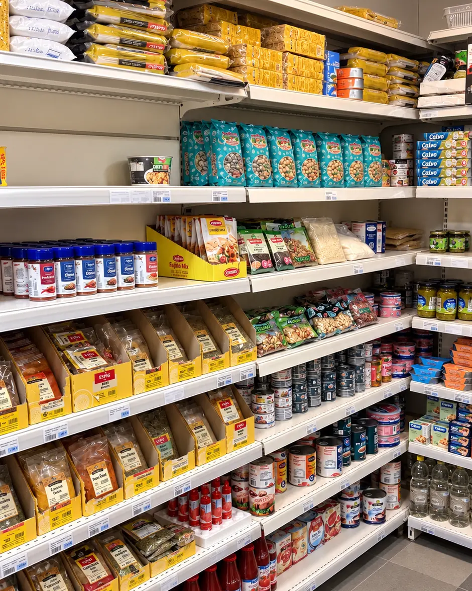
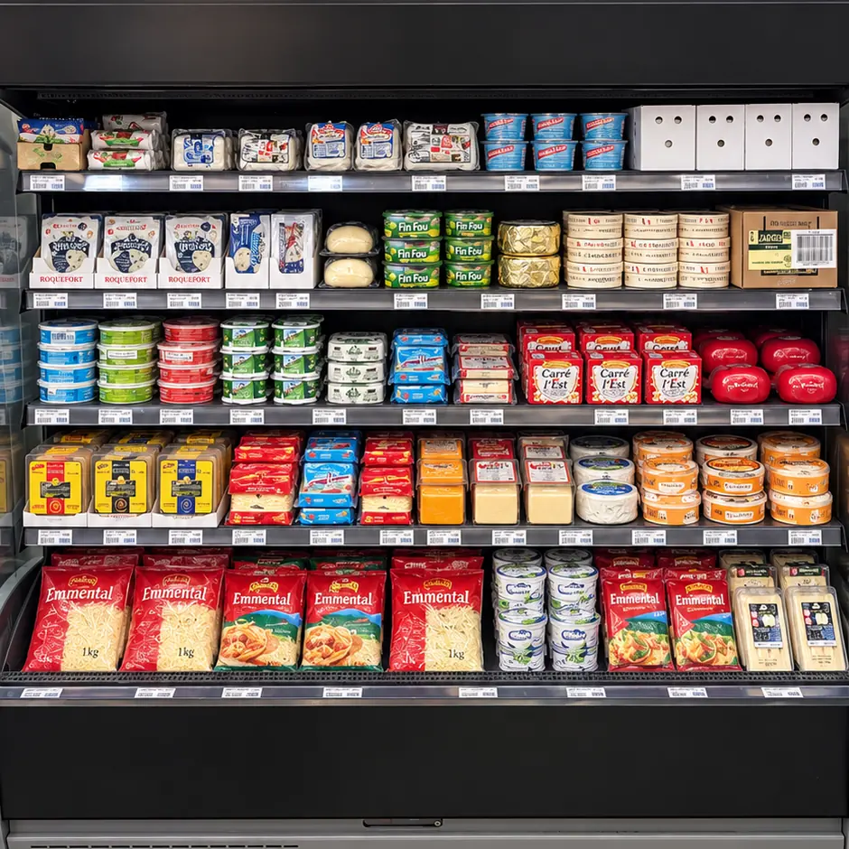
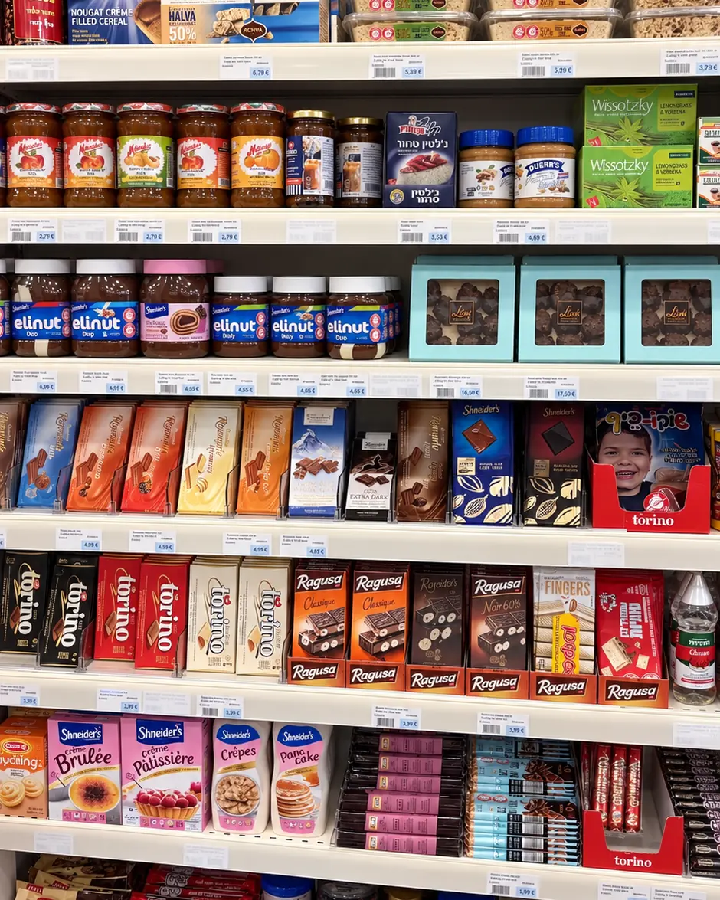
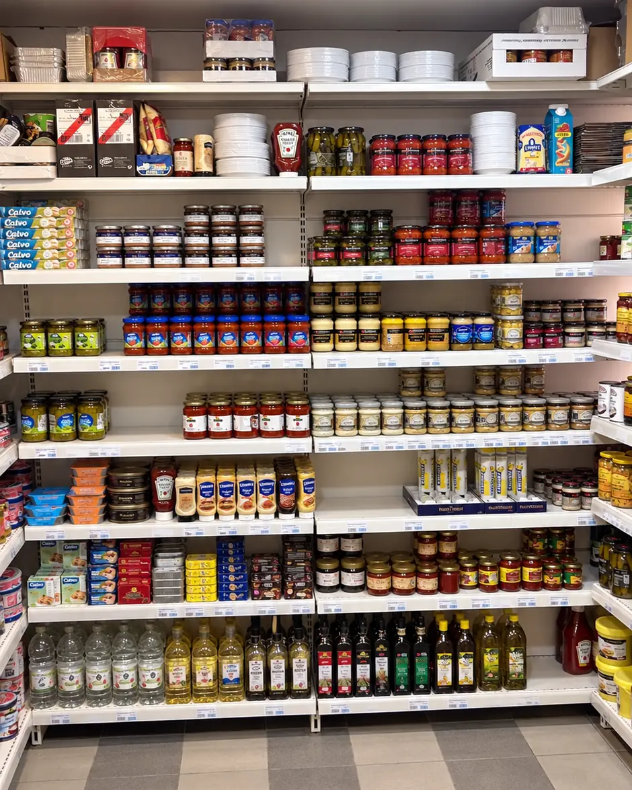
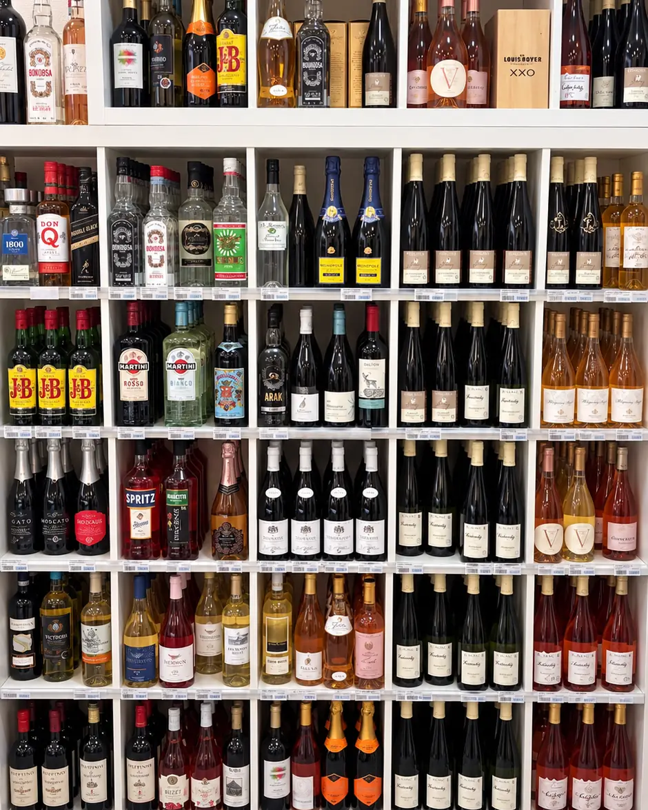
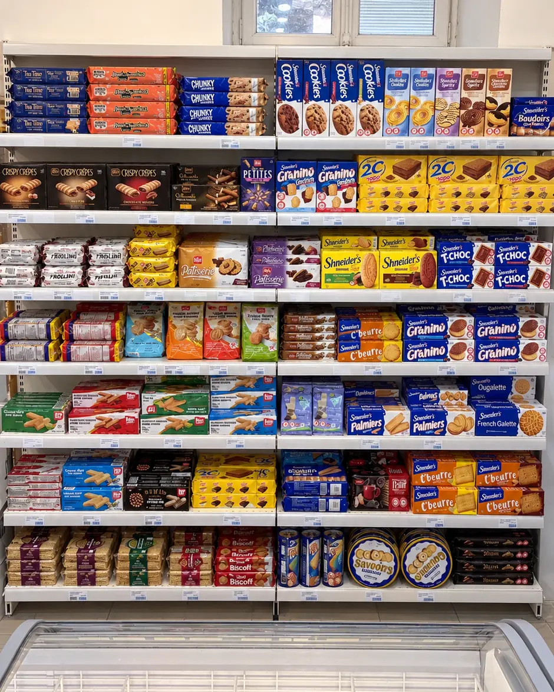
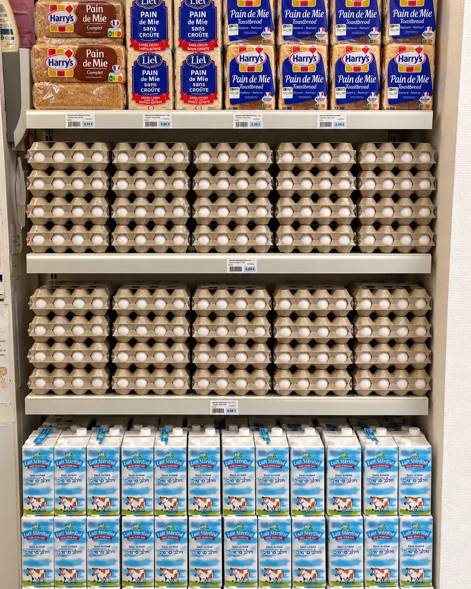
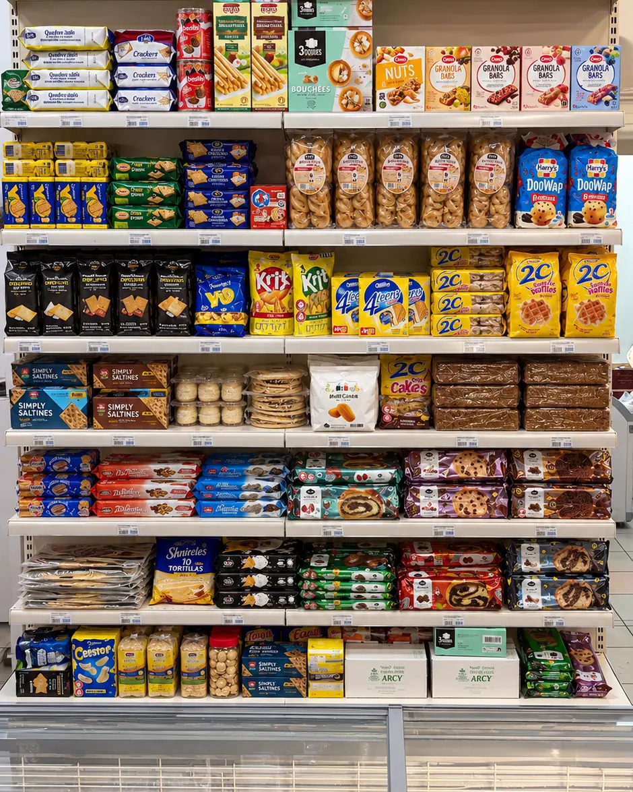
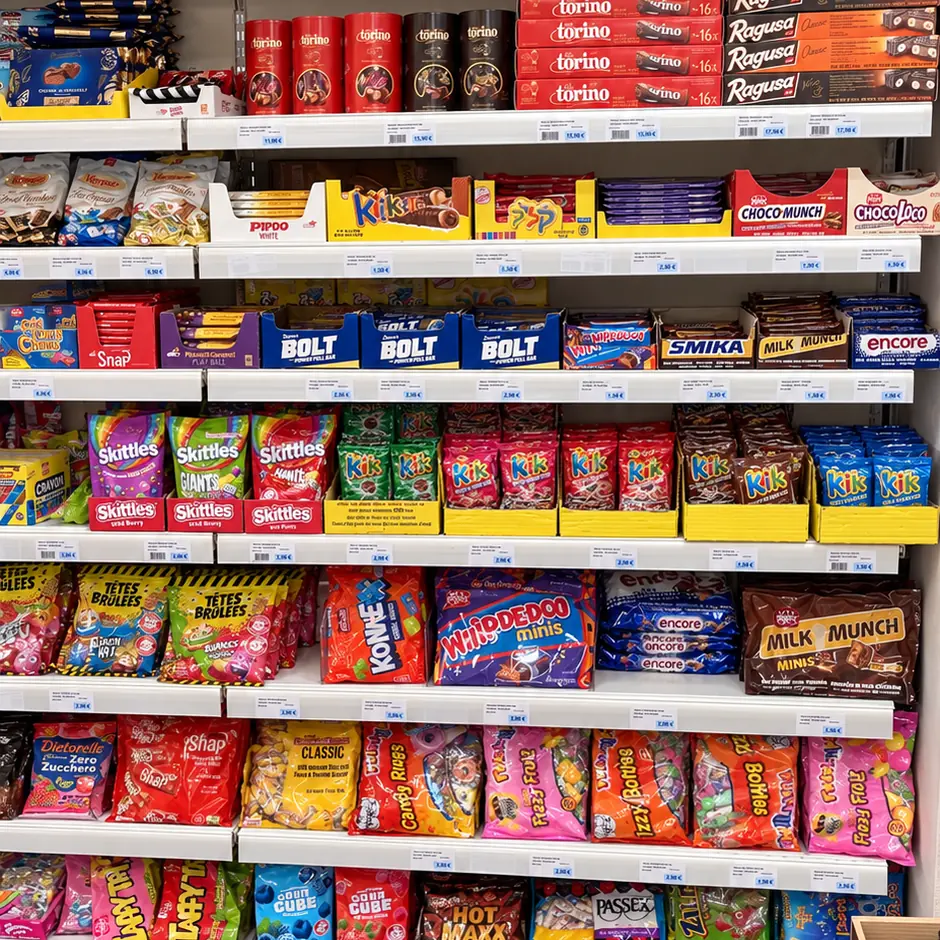

Le magasin
Une épicerie casher de proximité.
Shemtov Foch est un seul magasin, au 6 rue du Maréchal-Foch à Strasbourg. On y fait les courses du quotidien comme celles de Chabbat et des fêtes.

Ce que vous trouverez
Des produits du quotidien, au frais comme en rayon.
Épicerie salée et sucrée, snacks, crèmerie et fromages, viandes et charcuterie, poissons, surgelés, boissons et vins : les rayons couvrent les courses de la semaine.
L'assortiment varie selon les arrivages. Pour savoir si un produit est disponible, le plus simple est d'appeler le magasin.


En images
Le magasin, rayon après rayon.
Quelques vues de l'épicerie. Photos non contractuelles : l'assortiment change selon les arrivages.






Bon à savoir
Avant de venir.
Une épicerie casher
Shemtov Foch figure dans la liste des commerces casher du Consistoire Israélite du Bas-Rhin. Pour une question sur un produit précis, renseignez-vous en magasin.
Pas de commande en ligne
Il n'y a ni commande en ligne ni commande à distance : les courses se font en magasin. Une question avant de vous déplacer ? Appelez le magasin.
À bientôt au magasin.
6 rue du Maréchal-Foch, 67000 Strasbourg. Les horaires du jour et l'itinéraire sont sur la page Infos pratiques.